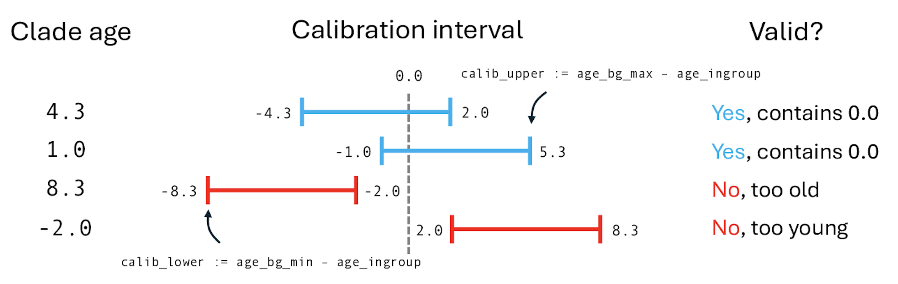
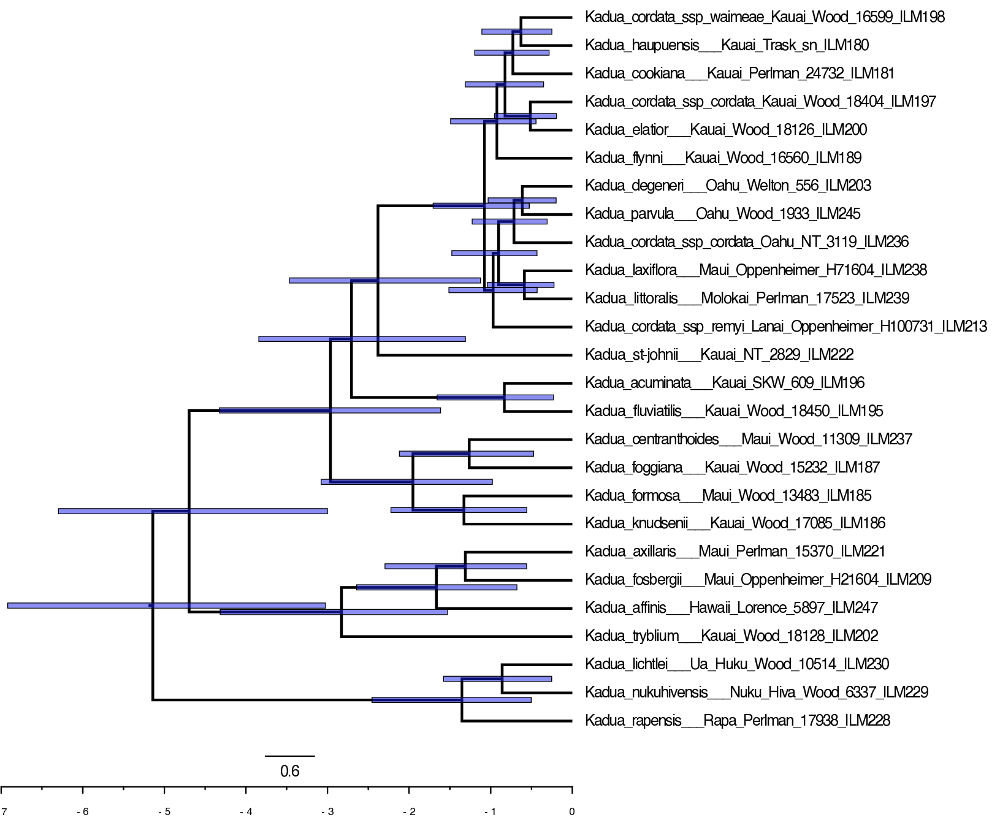
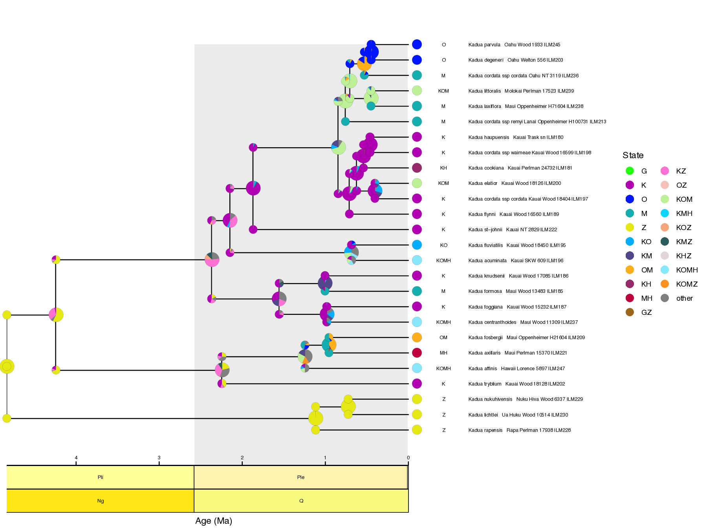

This tutorial demonstrates how to perform a biogeographic dating analysis using the TimeFIG model. Dating with TimeFIG jointly estimates phylogenetic divergence times, molecular substitution rates, biogeographic rates, and ancestral species ranges. The tutorial provides a conceptual background on challenges related to dating molecular phylogenies, alternative techniques for dating, and a framework to assess the sensitivity of divergence time estimates to methodological assumptions.
This tutorial has three parts:
As with previous tutorials in this series, we will analyze a dataset for Hawaiian Kadua plant species. All input datasets are the same as before, with the addition of 10 molecular loci obtained from the Angiosperms353 protocol.
Because these analyses build on each other, the tutorial focuses on what changes between the scripts. This tutorial is also bundled with RevBayes scripts that complete analyses equivalent to those written below. However, the scripts are often designed to be more modular and general, making them ideal to customize for analyses of new datasets, other than Hawaiian Kadua.
Tutorial files: This tutorial requires numerous input files and scripts to run properly. Download and unzip the timefig_dating_project.zip archive to create a project directory named timefig_dating_project. Enter the new directory to run the tutorial exercises. Analysis scripts are available on the sidebar for easy access.
Important version info!
Note: This tutorial currently requires specific versions of RevBayes and TensorPhylo to run properly (see linked branches and commits).
We recommend that you complete the tutorial using a PhyloDocker container, which is pre-configured with the above versions of RevBayes and TensorPhylo. Instructions to install and use PhyloDocker are here: link.
Molecular phylogenetic models use these estimates of genetic distance to infer phylogenetic divergence, in terms of topology (relationships among lineages) and branch lengths (distances along lineages). Phylogenetic models often measure genetic distances in units of expected substitutions per site. These distances are, in fact, the product of time (e.g. millions of years) and the substitution rate (substitutions per site per time). This substitution rate is often called the molecular clock (missing reference). An accurate estimate of such a clock rate would enable molecular dating, because a research would only need to convert molecular distances into clock “ticks” to estimate the ages of species in units of geological time.
Ideally, a molecular phylogenetic model would decompose branch length estimates into separate estimates of substitution rates and evolutionary time. In real biological settings, we never know the precise time or rate underlying a molecular distance, and they must both be estimated. The problem is there are an infinite number of products of rate, $r$, and time, $t$, that equal a given distance, $d$. For example, the products of both $d = r \times t = 10 \times 1$ and $d = r \times t = 2 \times 5$ both yield the same molecular distant, $d = 10$. Scenarios of a fast evolution over a short time and slow evolution over a long time produce the same amount of evolutionary change. This is known as rate-time non-identifiability. The phylogenetic model assigns equal likelihood to both of these alternative scenarios, so the true rate and time values cannot be learned directly from molecular data without extrinsic evidence
This tutorial demonstrates what happens when you run a simple molecular phylogenetic analysis without any information to time-calibrate the tree. The tutorial reviews several important concepts for phylogenetic tree estimation, such as the relaxed molecular clock. It also demonstrates that extrinsic (non-molecular) evidence is needed to time-calibrate divergence times using standard phylogenetic approaches.
For this example, we’ll compose a model where the phylogeny was generated by a constant-rate birth-death process and genes evolve under a relaxed molecular clock. We’ll refer to this as the divtime_uncalibrated analysis. Although the analysis can be run by calling source("./scripts/divtime_uncalibrated.Rev"), we’ll execute all code by hand to better understand how the model works.
Now to get started! First, we create variables to locate input datasets.
# set up filesystem variables
analysis = "divtime_uncalibrated"
dat_fp = "./data/kadua/"
phy_fn = dat_fp + "kadua.tre"
calib_fn = dat_fp + "kadua_calib.csv"
out_fn = "./output/" + analysis
These variables will later configure the MCMC analysis. The empty vectors for moves and monitors will be populated later.
# number of MCMC iterations
num_gen = 10000
# number of iterations between MCMC samples
print_gen = 50
# empty vector for MCMC moves
moves = VectorMoves()
# empty vector for MCMC monitors
monitors = VectorMonitors()
Next, we read in a phylogenetic tree. To simplify this analysis, we assume the tree topology is known (fixed) while the divergence times are unknown (estimated). We will use the first (only!) tree stored in phy_fn to define the topology.
# read a phylogeny
phy <- readTrees(phy_fn)[1]
# get its taxon set
taxa = phy.taxa()
# get the number of taxa
num_taxa = taxa.size()
# get the number of branches for a rooted tree
num_branches = 2 * num_taxa - 2
After that, we read in 10 molecular sequence alignments, each one corresponding to a different Angiosperms353 locus. We store the each locus as an element in a vector.
# create vector of molecular alignment matrices
num_loci = 10
# visit each locus
for (i in 1:num_loci) {
# set alignment file name
mol_fn[i] = dat_fp + "kadua_gene_" + i + ".nex"
# read alignment
dat_mol[i] = readDiscreteCharacterData(mol_fn[i])
# record alignment length
num_sites[i] = dat_mol[i].nchar()
}
We did not have perfect coverage for all taxa across all loci, so we will add missing sequence data for each taxon present in the tree but absent for a locus.
# collect the taxon names as strings
for (i in 1:num_taxa) {
taxa_names[i] = taxa[i].getName()
}
# visit each locus
for (i in 1:num_loci) {
# hide all taxa for this locus
dat_mol[i].excludeTaxa( dat_mol[i].taxa() )
# unhide all taxa from the phylogeny in this locus
dat_mol[i].includeTaxa( taxa )
# insert ???? chars for taxa in phylogeny but not this locus
dat_mol[i].addMissingTaxa( taxa )
}
Next, we will manually configure the birth-death model by entering commands. In the future, you can instead load the birth-death phylogenetic model setup definition using source("./scripts/phylo_bdp.Rev").
We first assign priors to the net diversification rate (birth - death) and turnover proportion (ratio of death to birth events). Throughout the tutorial, we will pair new model parameters with moves that eventually instruct MCMC how to update parameter values during model fitting.
Net diversification rate controls how rapidly species accumulation, whereas turnover proportion controls the speed of extinction relative to speciation. This parameterization often behaves better for model fitting, and many biologists prefer to think in these terms.
# net diversification rate (birth - death)
diversification ~ dnExp(5)
# turnover proportion (death / birth)
turnover ~ dnBeta(2,2)
# convert into birth and death rates
birth := diversification / abs(1.0 - turnover)
death := birth * turnover
# moves to update rates
moves.append( mvScale(diversification, weight=3) )
moves.append( mvScale(turnover, weight=3) )
Based on ongoing taxonomic work led by the National Tropical Botanical Garden, there are 32 Kadua taxa in our clade of interest, but only 27 are represented in our analysis. We use the $\rho$ parameter to inform our birth-death process that some fraction are missing (unsampled) and not e.g. extinct.
# proportion of sampled taxa
sample_prop <- taxa.size() / 32
Next, we assign a prior on the root age of the clade. For now, we assume we know nothing about the age of Hawaiian Kadua, except that the clade is probably younger than the Eocene-Oligocene boundary at 34 Ma. Set up root age prior. Note, we will modify this in the next section.
# wide ignorance prior on root age
root_age ~ dnUniform(0.0, 34)
# move to update root_age
moves.append( mvScale(root_age, weight=15) )
We now have what we need to construct a constant-rate birth process. In addition to the taxon set and various model parameters, the process conditions on a stopping condition (e.g. a time duration, producing some number of taxa, etc.) and a sampling strategy (how are sampled taxa selected). We use time as the stopping criterion and assume included taxa were sampled uniformly at random.
# constant rate birth-death process
timetree ~ dnBDP(lambda=birth,
mu=death,
rho=sample_prop,
rootAge=root_age,
samplingStrategy="uniform",
condition="time",
taxa=taxa)
# move to update internal node ages (move for root age is above)
moves.append( mvNodeTimeSlideUniform(timetree, weight=2*num_taxa) )
We now initialize the timetree variable with the phylogeny we read from file, stored in phy. This is primarily to set the topology, but it can also be used to initialize the model with reasonable starting values for divergence times. If you don’t initialize the tree, you will want to create moves to infer the tree topology.
# initialize value of timetree
timetree.setValue(phy)
Inferring topology
The analyses in this tutorial can be modified to also estimate tree topology. To do so, add these moves:
# nearest neighbor interchange move moves.append( mvNNI(timetree, weight=2*num_taxa) ) # fixed nodeheight prune regraft move moves.append( mvFNPR(timetree, weight=1*num_taxa) )
We want the crown node ages of important clades in Hawaiian Kadua to appear in our MCMC trace file. Calling source("./scripts/kadua_clade.Rev") will construct six clades based on predefined Kadua taxon sets. We then create deterministic nodes to track the crown node ages of these clades using the tmrca() function, which will be monitored.
# load Kadua clade statements
source("./scripts/kadua_clade.Rev")
# create variables to monitor clade ages
age_ingroup := tmrca(timetree, clade_ingroup)
age_affinis := tmrca(timetree, clade_affinis)
age_centrantoides := tmrca(timetree, clade_centrantoides)
age_flynni := tmrca(timetree, clade_flynni)
age_littoralis := tmrca(timetree, clade_littoralis)
age_littoralis_flynni := tmrca(timetree, clade_littoralis_flynni)
diff_age_root_ingroup := root_age - age_ingroup
Now we have a variable representing our phylogeny. Next, we’ll model how molecular variation accumulates over time. For this, we will construct a partitioned substitution model with a relaxed molecular clock. This means rates of molecular evolution can vary among branches, among loci, and among sites. The following code can be executed by calling source("./scripts/mol_ctmc.Rev"), but you should specify the model by hand to better understand its composition.
First, we create the relaxed clock model. The following code creates a vector of clock rates that are lognormally distributed. Later, the rates in this vector will be used to define branch-varying clock rates. To do so, we first define a base clock rate, mu_mol_base
# base molecular clock rate
mu_mol_base ~ dnExp(10)
# move to base molecular clock rate
moves.append( mvScale(mu_mol_base, weight=5) )
Then, we draw branch rates whose mean equals that base clock rate and 95% of possible branchwise rate variation spans one order of magnitude (determined by the magic number 0.587405).
# lognormal standard deviation for relaxed molecular clock
mu_mol_sd <- 0.587405
# lognormal mean for relaxed molecular clock, designed to
# have an expected value equal to mu_mol_base
ln_mean := ln(mu_mol_base) - 0.5 * mu_mol_sd * mu_mol_sd
# visit each branch in the tree
for (i in 1:num_branches) {
# molecular clock rate for this branch
mu_mol_branch[i] ~ dnLnorm(ln_mean, mu_mol_sd)
# move to update this branch's clock rate
moves.append( mvScale(mu_mol_branch[i], weight=1) )
}
How relaxed is the clock?
The parameter
mu_mol_sdcontrols how much clock rates vary among branches. In the above example, we fixmu_mol_sd <- 0.587405to allow for a moderate amount of branch rate variation. Alternatively, this parameter could be estimated directly from the sequence data. In most cases, this will improve the fit of the model and indirectly improve divergence time estimates, but at an increased computational cost. For more rigorous analyses, consider replacing the constant variable formu_mol_sdwith a random variable, in the code above.# comment out the fixed variable # mu_mol_sd <- 0.587405 # replace with a random variable mu_mol_sd ~ dnExp(1) # move to update variable moves.append( mvScale(mu_mol_sd, weight=5) )As MCMC fits the model, it will additionally estimate to what extent your clock is relaxed. Learn more about relaxed molecular clocks here (LINK).
In a partitioned analysis, each locus has its own evolutionary rates. We will assign each locus its own rate scaling factor, rate matrix, and site-rate variation parameters. Read through this tutorial (LINK) to learn more about the design of partitioned analyses.
To model among-locus rate variation, the substitution process multiplies the relaxed clock branch rate vector (mu_mol_branch) by a per-locus relative rate factor. This allows each locus to experience a different substitution rate, while also allowing all loci to share the same set of branchwise relaxed clock rates. We fix the relative rate factor for the first locus to the value 1. All remaining loci have relative rate factors drawn from a lognormal distribution with an expected value of 1 – i.e. they may be slower or faster than the first locus. Taking the product mu_mol_locus_rel[i] * mu_mol_branch gives us a new vector of per-locus branch rates that are rescaled by the relative rate factor, and stored into mu_mol[i]. We use this vector of relaxed branch-by-locus clock rates later when constructing the substitution model.
# visit each locus
for (i in 1:num_loci) {
# first locus provides the base relative rate of 1
mu_mol_locus_rel[i] <- 1.0
# assign random relative rates to all remaining loci
if (i > 1) {
# relative rates have a mean of 1
mu_mol_locus_rel[i] ~ dnLognormal(-1/2, 1)
# add move to update per-locus relative rate
moves.append(mvScale(mu_mol_locus_rel[i], weight=3))
}
# construct rescaled branch rates for this locus
mu_mol[i] := mu_mol_locus_rel[i] * mu_mol_branch
}
Next, we specify the HKY rate matrix, Q_mol to define transition rates among nucleotides. The HKY rate matrix uses the kappa parameter to control relative rates of transitions (e.g. purine to purine, pyrimadine to pyrimadine) and transversions (purine to pyrimadine, pyrimadine to purine). The pi_mol parameter controls the stationary frequencies across nucleotides for the model. The prior mean on kappa is 1 and the prior mean on pi_mol is a flat Dirichlet distribution. Read more about the HKY matrix here (missing reference).
# visit each locus
for (i in 1:num_loci) {
# transition transversion rate-ratio (expected value of 1)
kappa_mol[i] ~ dnLognormal(-1/2, 1)
# base frequencies
pi_mol[i] ~ dnDirichlet( [1,1,1,1] )
# HKY85 substitution matrix
Q_mol[i] := fnHKY(kappa=kappa_mol[i], baseFrequencies=pi_mol[i])
# add moves to updat TiTv ratio and base frequencies
moves.append(mvSimplex(pi_mol[i], alpha=3, offset=0.5, weight=3))
moves.append(mvScale(kappa_mol[i], weight=3))
}
Molecular rates variation among sites follow a Gamma distribution, approximated with four discrete rate classes. When alpha is large, all classes have relative rate factors of 1. When alpha is small, most rate classes are near 0 and one rate class is far greater than 1. Read more about the +Gamma among site rate variation model here (missing reference).
# visit each locus
for (i in 1:num_loci) {
# alpha controls whether all sites have the same or different rates
alpha_mol[i] ~ dnExp(0.1)
# among site rate variation model, +Gamma4
site_rates_mol[i] := fnDiscretizeGamma(shape=alpha_mol[i],
rate=alpha_mol[i],
numCats=4)
# add move to update alpha
moves.append(mvScale(alpha_mol[i], weight=3))
}
Now we have all the model components we need to define a partitioned molecular substitution model. This is called the phylogenetic continuous-time Markov chain (or phyloCTMC) in RevBayes. The dnPhyloCTMC models patterns of nucleotide variation under the evolutionary model for a given phylogenetic tree.
We create one dnPhyloCTMC model for each locus. Each locus evolves along the branches of timetree, the phylogeny whose divergence times we wish to estimate.
# visit each locus
for (i in 1:num_loci) {
# substitution process along branches of phylogeny
x_mol[i] ~ dnPhyloCTMC(
Q=Q_mol[i],
tree=timetree,
branchRates=mu_mol[i],
siteRates=site_rates[i],
rootFrequencies=pi_mol[i],
nSites=num_sites_mol[i],
type="DNA" )
}
We clamp the observed sequence alignment for each locus to the corresponding partitioned model component.
# visit each locus
for (i in 1:num_loci) {
# clamp this molecular matrix to this molecular model
x_mol[i].clamp(dat_mol[i])
}
We also apply special joint moves for updating the tree and molecular rates simultaneously. These moves are designed to take advantage of the fact that rate and time are not separately identifiable. That is, the likelihood remains unchanged if you multiply rates by 2 and divide times by 2. In short, these moves improve the performance of MCMC mixing.
# move to scale time (up) opposite of rate (down)
up_down_scale_tree = mvUpDownScale(lambda=1.0, weight=20)
up_down_scale_tree.addVariable(timetree, up=true)
up_down_scale_tree.addVariable(root_age, up=true)
up_down_scale_tree.addVariable(mu_mol_branch, up=false)
up_down_scale_tree.addVariable(mu_mol_base, up=false)
moves.append(up_down_scale_tree)
# move to scale base (up) and branch (up) rates
up_down_mol_rate = mvUpDownScale(lambda=1.0, weight=20)
up_down_mol_rate.addVariable(mu_mol_branch, up=true)
up_down_mol_rate.addVariable(mu_mol_base, up=true)
moves.append(up_down_mol_rate)
# move to rebalance rate and age parameters for internal tree node
rate_age_proposal = mvRateAgeProposal(timetree, weight=20, alpha=5)
rate_age_proposal.addRates(mu_mol_branch)
moves.append(rate_age_proposal)
Next, we construct monitors to capture information from our MCMC as it searches parameter space.
# screen monitor, so you don't get bored
monitors.append( mnScreen(root_age, printgen=print_gen) )
# file monitor for all simple model variables
monitors.append( mnModel(printgen=print_gen, file=out_fn+".model.txt") )
# file monitor for tree
monitors.append( mnFile(timetree, printgen=print_gen, file=out_fn + ".tre") )
Now that our model, moves, and monitors are properly configured, we can run MCMC.
# create model object
mymodel = model(timetree)
# create MCMC object
mymcmc = mcmc(mymodel, moves, monitors)
# run MCMC
mymcmc.run(num_gen)
Generate a maximum clade consensus tree after the job is complete.
# read trace of sampled phylogenetic trees
tt = readTreeTrace (file=out_fn+".tre", treetype="clock", burnin=0.2)
# summarize phylogenies with maximum clade credibility tree
mcc_tree = mccTree(trace=tt, file=out_fn+".mcc.tre")
Let’s view the MCC tree for the uncalibrated analysis in FigTree (Fig. ).
Notice that node ages vary wildly in the uncalibrated analysis, up to the maximum age of 34.0 Ma.
In practice, biologists use extrinsic evidence to “calibrate” the molecular clock to a geological timescale. Fossil evidence can be used to constrain the minimum age of a phylogenetic divergence event (e.g. a child species cannot be older than its parent species), which effectively constrains time and, indirectly, rate estimates. Two main approaches have been used to deploy fossil-based calibrations. Prior-based calibrations assign a node age distribution to internal nodes on a phylogeny, selected and specified using expert knowledge. Process-based calibrations explicitly incorporate fossil morphology and ages as data during phylogenetic inference to assign ages to clades. Read these excellent papers to read more about fossil-based dating.
Paleogeography provides a complementary source of information to estimate divergence times through biogeographic dating. Biogeographic dating is often used for studying clades that possess no useful fossils (e.g. clades of island plants, like Kadua). The logic for biogeographic dating is as follows: imagine a clade of ten species that are endemic to a volcanic island that is less than one million years old. If it is assumed a single lineage colonized the island after it emerged, then the maximum age of the clade must be younger than the island, allowing the biologist to calibrate the molecular clock.
We’ll now repeat the previous exercise, but this time we will use calibration densities to constrain the ages of two nodes during inference. The root node age will be constrained by a secondary node age calibration, derived from a previous fossil-calibrated analysis on a family-level phylogeny that happened to include the most recent common ancestor of Hawaiian and non-Hawaiian Kadua (i.e., our root node). In addition, the maximum age of the Hawaiian Kadua radiation (the “ingroup” of our analysis) will be constrained to be equal to or less than the oldest High Islands (<6.3 Ma).
To proceed, we suggest that you make a new copy of ./scripts/divtime_unconstrained.Rev that is named ./scripts/divtime_nodeprior.Rev. Then, rather than typing all the commands, modify the content of the script as described below. After all modifications are in place, you can run the analysis by typing:
source("./scripts/divtime_nodeprior.Rev")
If the script runs successfully, you should see MCMC diagnostics being printed to the screen. If the script fails to run, carefully read the error messages provided by RevBayes to correct the issue. RevBayes error messages generally report the location and the type of error.
Once you have your new copy of the script, begin editing it. First, we’ll time-calibrate the root node that represents the most recent common ancestor of our clade. A previous fossil-based Bayesian analysis estimated the age of this node as 7.0 [3.0, 13.0] Ma (posterior mean and HPD95 credible interval).
Previously, the root_age variable followed the distribution dnUniform(0,34). We replace the wide prior for root_age with a narrower prior reflecting the secondary node age calibration.
The new root_age prior density is easily replaced with the following commands:
# comment out the uniform prior on root age!
# root_age ~ dnUniform(0.0, 32.0)
# Calibration density #1: MRCA of sampled Kadua
# secondary calibration corresponding
# to MRCA of Hawaiian and non-Hawaiian Kadua
root_age ~ dnNormal(3.0, 13.0)
root_age.setValue( phy.rootAge() )
moves.append( mvScale(root_age, weight=15) )
A shapelier node age density prior
Rather than implementing the secondary node age calibration as a flat prior on
root_age, we could instead design with prior with more shape. For example, to use a truncated normal distribution with mean, min, and max ages matching the posterior mean, lower, and upper bounds of the 95% credible interval above. The standard deviation of the prior is similarly design so the width of the interval $\pm 2\sigma$ matches the width of the credible interval, then further doubled to be conservative (less informative).# comment out the uniform prior on root age! # root_age ~ dnUniform(0.0, 32.0) # Alternate calibration density #1: MRCA of sampled # Kadua secondary calibration corresponding # to MRCA of Hawaiian and non-Hawaiian Kadua # get mean, min, max ages for secondary calibration mean_age <- dat_calib[1][2] min_age <- dat_calib[1][3] max_age <- dat_calib[1][4] # set width of HPD95 CI equal to width of +/- 2sd sd_age <- abs(max_age - min_age) / 4 # further double sd make prior more diffuse sd_age <- sd_age * 2 # set root age prior root_age ~ dnNormal(mean=mean_age, sd=2*sd_age, min=min_age, max=max_age) # initialize root age root_age.setValue( phy.rootAge() ) # add move to update root age moves.append( mvScale(root_age, weight=15) )
The second calibration restricts the maximum age of the Hawaiian Kadua crown age. The code stored in ./scripts/kadua_clade.Rev names relevant clades, including clade_ingroup. We then use the tmrca function to track the time to the most recent common ancestor for members of each clade. These variables do not influence the model probability or model fitting in any way. They are only monitored during MCMC sampling.
Recall from the previous tutorial on molecular phylogenetics that we created the ingroup_age variable to monitor crown node age of the Hawaiian ingroup. We want this age to be restricted, where the lower bound is the minimum allowable age for the node, 0.0 Ma (the present), and the upper bound is the maximum age of the High Islands, 6.3 Ma (the past). Enter the following commands, then we will work through the logic with the help of Figure .
# Calibration density #2: MRCA of Hawaiian Kadua
# MRCA of extant and sampled Hawaiian Kadua is assumed to be less than the
# maximum (very conservative) age of the oldest High Island (Kauai, <6.3 Ma)
# get min and max age for prior
age_bg_min <- 0.0
age_bg_max <- 6.3
# set lower/upper bounds as difference between min/max age and ingroup age
calib_lower := age_bg_min - age_ingroup
calib_upper := age_bg_max - age_ingroup
# set calibration interval
calib_clade ~ dnUniform(calib_lower, calib_upper)
calib_clade.clamp(0.0)
Calibration in RevBayes works by setting the calibration variable to fixed value of 0.0. You can then imagine the calibration density as a “sliding window” that assigns a probability to the fixed point of zero. The position of this sliding window depends on the difference between the clade’s age and relative to the window. In our case, the fixed point of 0.0 will always be greater than the lower bound of calib_lower := 0.0 - age_ingroup, because clades always have positive ages. The fixed point 0.0 will be less than the upper bound of calib_upper := 6.3 - age_ingroup only when age_ingroup < 6.3. When age_ingroup > 6.3, then the fixed value of calib_clade > 6.3 - age_ingroup and the prior density will assign probability zero to the node age constraint being satisfied. Phylogenetic trees that violate the node age constraint will always be discarded and never appear in the posterior sample. Learn more about divergence time estimation using node age calibrations in RevBayes through this tutorial: link.

Let’s view the MCC tree for the prior-based time-calibration analysis in FigTree (Fig. ).

Notice that the clade is now much younger. The upper bound of the HPD95 for the age of Hawaiian Kadua is always less than 6.3 Ma, as by design.
Biogeographic dating has typically relied on prior-based constraints. On the positive side, prior-based constraints are extremely easy to apply and are computationally inexpensive. Constraining node ages also has downsides. For one, it requires that the biologist makes strong assumptions about many unknowable factors. For Hawaiian Kadua, the ideal node calibration prior would account for how long it takes for a progenitor species to colonize into and radiate upon a newly formed island. However, that is precisely what historical biogeographers want to infer from data. What factors would you use to constrain the maximum age of Kadua? How would you justify their use? How would you encode them into a prior calibration density?
In addition to this conceptual challenge, there is also a methodological concern. Using a biogeographic hypothesis to date a clade (e.g. “we assume the islands were colonized after they originate”) means that the resulting dated phylogeny cannot be safely used to test downstream biogeography hypotheses (“when were the islands first colonized by the clade?”). Doing so is circular. For example, a prior that restricts all Kadua to be younger than Kauai eliminates the possibility that ancestral species colonized the older Northwestern Islands before the emergence of the High Islands.
Biogeographic dating with a process-based approach uses paleogeographically-informed biogeographic rates to extract information about divergence times through a dataset (Landis 2020). Unlike molecular rates of evolution, these biogeographic rates vary in response to the paleogeographic features at a given geological time. This establishes a timescale for the phylogeny that enables the molecular clock to be estimated. Previous approaches for process-based biogeographic dating relied on simpler models that did not consider how speciation and extinction rates vary among regions over time (missing reference). TimeFIG models this important relationship between paleogeographically-varying features, species ranges, biogeographic rates, and divergence times.
We now proceed with a full TimeFIG analysis for biogeographic dating. Because we already ran a TimeFIG analysis on a fixed tree in the previous tutorial, this tutorial will instead demonstrate how to convert the fixed-tree TimeFIG analysis to treat the tree as a random variable. Broadly speaking, we’ll apply what we learned about molecular phylogenetics in the first part of this tutorial in combination with what we learned from the previous fixed-tree TimeFIG analysis.
Note, we already know how to set up a molecular phylogenetic analysis and a TimeFIG analysis from previous exercises. Read those tutorials for details if you skipped ahead. Rather than re-implementing the complete model by hand a second time, we’ll simply import Rev scripts that instantiate molecular phylogenetic and TimeFIG model components to design our model.
This analysis can be run by calling source("./scripts/divtime_timefig.Rev"), however you should build the model through the console when using it for the first time.
Let’s get started! First, we load the TensorPhylo plugin.
# location of your TensorPhylo library
plugin_fp = "/Users/mlandis/.local/lib/tensorphylo"
# load TensorPhylo plugin
loadPlugin("TensorPhylo", plugin_fp)
We will use the same basic fileset as the molecular phylogenetics exercise.
# filesystem variables
analysis = "divtime_timeFIG"
dat_fp = "./data/kadua/"
phy_fn = dat_fp + "kadua.tre"
out_fn = "./output/" + analysis
Now, we also load species range data and paleogeographical data for the TimeFIG analysis.
# new filesystem variables
bg_fn = dat_fp + "kadua_range_n7.nex"
geo_fp = "./data/hawaii/"
feature_fn = geo_fp + "feature_summary.csv"
times_fn = geo_fp + "age_summary.csv"
Next, we create various MCMC analysis settings, to be used later.
# number of processors for TensorPhylo
num_proc = 6
# number of MCMC iterations
num_gen = 10000
# number of interations between MCMC samples
print_gen = 10
# empty vector for MCMC moves
moves = VectorMoves()
# empty vector for MCMC monitors
monitors = VectorMonitors()
Load the input datasets for the analysis. First, we load a tree variable for its taxon set and topology of species relationships.
# read the phylogenetic tree
phy <- readTrees(phy_fn)[1]
# store its taxon set
taxa = phy.taxa()
# get the number of taxa
num_taxa = taxa.size()
# compute the number of branches in a rooted tree
num_branches = 2 * num_taxa - 2
Next, we load in our biogeographic character matrix of species presence (1) and absences (0) across regions. Recall that we convert these presence-absence vectors into an integer-based representation. We also use this matrix to determine the num_regions and num_ranges, which will be $2^N - 1$ when max_range_size == num_regions and smaller otherwise.
# read the biogeographic matrix of region presence/absence data
dat_01 = readDiscreteCharacterData(bg_fn)
# get the number of regions
num_regions = dat_01.nchar()
# set a maximum range size
max_range_size = 4
# compute the number of ranges from num_regions and max_range_size
num_ranges = 0
for (k in 1:max_range_size) {
num_ranges += choose(num_regions, k)
}
# convert the presence/absence matrix into integer-valued ranges
dat_nn = formatDiscreteCharacterData(dat_01, format="GeoSSE", numStates=num_ranges)
# save relationships between 01 and integer coding to file
#desc = dat_nn.getStateDescriptions()
#write("index,range\n", filename=label_fn)
#for (i in 1:desc.size()) {
# write((i-1) + "," + desc[i] + "\n", filename=label_fn, append=true)
#}
Load in the molecular dataset.
# create vector of molecular alignment matrices
num_loci = 10
# visit each locus
for (i in 1:num_loci) {
# set alignment file name
mol_fn[i] = dat_fp + "kadua_gene_" + i + ".nex"
# read alignment
dat_mol[i] = readDiscreteCharacterData(mol_fn[i])
# record alignment length
num_sites[i] = dat_mol[i].nchar()
}
As before, align the taxon labels with the tree, adding ambiguous states for missing taxa in each locus.
# collect the taxon names as strings
for (i in 1:num_taxa) {
taxa_names[i] = taxa[i].getName()
}
# visit each locus
for (i in 1:num_loci) {
# hide all taxa for this locus
dat_mol[i].excludeTaxa( dat_mol[i].taxa() )
# unhide all taxa from the phylogeny in this locus
dat_mol[i].includeTaxa( taxa )
# insert ???? chars for taxa in phylogeny but not this locus
dat_mol[i].addMissingTaxa( taxa )
}
Now we load the model that defines relationships between regional features and biogeographic rate factors.
# load model components for feature informed GeoSSE rates
source("./scripts/geo_timefig.Rev")
Then we load the script that specifies the TimeFIG model.
# load model components for GeoSSE using TensorPhylo
source("./scripts/phylo_timefig.Rev")
Note, this script is identical to the script used in the previous TimeFIG tutorial that assumed a fixed phylogeny, with two exceptions. First, rather than assuming the root_age variable is fixed as a constant node, we assign it a uniform prior from 0 to 34 Ma, as we did in the uncalibrated analysis. The script also constructs MCMC moves to update all node ages, including the root node.
# NOTE: you do not need to enter these lines code to the console
# estimate root node age
root_age ~ dnUniform(0, 34)
moves.append( mvScale(root_age, weight=15) )
# estimate internal node ages
moves.append( mvNodeTimeSlideUniform(timetree, weight=2*num_taxa) )
Next, we load the molecular model, identical to that used earlier in this tutorial.
# load model components for multilocus molecular substitution process
source("./scripts/mol_ctmc.Rev")
Previously, we initialized the timetree variable with the value of phy to set the tree topology. We also clamped the sequence data for each molecular locus to each CTMC, x_mol[i], in the multilocus analysis. Unlike before, we also need to clamp our biogeographic range data to the timetree variable.
# set GeoSSE tree topology (and initial divergence times)
timetree.setValue(phy)
# clamp GeoSSE biogeographic data
timetree.clampCharData(dat_nn)
# clamp molecular data
for (i in 1:num_loci) {
x_mol[i].clamp(dat_mol[i])
}
Now our TimeFIG model is configured and associated with our molecular, biogeographic, and paleogeographic data. Next, we construct joint moves to help MCMC explore tree and rate space.
# move to scale time (up) opposite of rate (down)
up_down_scale_tree = mvUpDownScale(lambda=1.0, weight=20)
up_down_scale_tree.addVariable(timetree, up=true)
up_down_scale_tree.addVariable(root_age, up=true)
up_down_scale_tree.addVariable(mu_mol_branch, up=false)
up_down_scale_tree.addVariable(mu_mol_base, up=false)
moves.append(up_down_scale_tree)
# move to scale base (up) and branch (up) rates
up_down_mol_rate = mvUpDownScale(lambda=1.0, weight=20)
up_down_mol_rate.addVariable(mu_mol_branch, up=true)
up_down_mol_rate.addVariable(mu_mol_base, up=true)
moves.append(up_down_mol_rate)
# move to rebalance rate and age parameters for a node
rate_age_proposal = mvRateAgeProposal(timetree, weight=20, alpha=5)
rate_age_proposal.addRates(mu_mol_branch)
moves.append(rate_age_proposal)
We also create the same original set of monitors.
# screen monitor, so you don't get bored
monitors.append( mnScreen(root_age, printgen=print_gen) )
# file monitor for all simple model variables
monitors.append( mnModel(printgen=print_gen, file=out_fn+".model.txt") )
# file monitor for tree
monitors.append( mnFile(timetree, printgen=print_gen, file=out_fn + ".tre") )
We also create monitors to track the biogeographic rates per region per time interval.
# file monitor for biogeographic rates
for (k in 1:num_times) {
bg_mon_fn = out_fn + ".time" + k + ".bg.txt"
monitors.append( mnFile( filename = bg_mon_fn, printgen=print_gen,
rho_e, rho_w, rho_d, rho_b,
r_e[k], r_w[k],
r_d[k][1], r_d[k][2], r_d[k][3], r_d[k][4],
r_d[k][5], r_d[k][6], r_d[k][7],
r_b[k][1], r_b[k][2], r_b[k][3], r_b[k][4],
r_b[k][5], r_b[k][6], r_b[k][7],
m_e[k][1], m_w[k][1],
m_d[k][1], m_d[k][2], m_d[k][3], m_d[k][4],
m_d[k][5], m_d[k][6], m_d[k][7],
m_b[k][1], m_b[k][2], m_b[k][3], m_b[k][4],
m_b[k][5], m_b[k][6], m_b[k][7] ) )
}
You can also create a ancestral state monitor to sample ancestral ranges that are reflect with the phylogenetic, biogeographic, and paleogeographic dynamics of the system. Note, that the ancestral states generated during a given MCMC iteration are consistent with the value of the (random) phylogeny and model parameters at that same iteration.
# monitor ancestral ranges at internal nodes
monitors.append( mnJointConditionalAncestralState(
tree=timetree, glhbdsp=timetree, printgen=print_gen,
filename=out_fn+".states.txt",
withTips=true, withStartStates=true, type="NaturalNumbers") )
Similarly, you can construct a monitor to generate stochastic mappings that represent the timing and sequence of historical biogeographic events for a given MCMC iteration. That said, stochastic mapping under SSE models can be computationally intensive, so recommend leaving the option disabled or to generate stochastic mappings infrequently.
# monitor stochastic mappings along branches of tree
# NOTE: uncomment if needed, but can cause performance issues
# monitors.append( mnStochasticCharacterMap(
# glhbdsp=timetree, printgen=print_gen*10,
# filename=out_fn+".stoch.txt",
# use_simmap_default=false) )
With our model, moves, and monitors all in place, we can build and run our MCMC analysis.
# create model object
mymodel = model(timetree)
# create MCMC object
mymcmc = mcmc(mymodel, moves, monitors)
# run MCMC
mymcmc.run(num_gen)
Now, let’s inspect the MCC tree for the TimeFIG-based time-calibration analysis in FigTree (Fig. ).
Notice how the clade is younger than the uncalibrated and prior-based node age calibration analyses.
Reviewing the marginal posterior densities of the ingroup crown age help reveal why the prior-based BDP calibration and process-based TimeFIG calibration differ.
Notice that the posterior ingroup age for the prior-based calibration is never older than 6.3 Ma, the maximum age constraint we applied (green density in Fig. ). This constraint means the crown age of Hawaiian Kadua must be younger than the oldest High Islands (Kauai and Niihua).
While the posterior-based TimeFIG calibration produces a young mean age for the Hawaiian ingroup’s crown node, it also allows for the ingroup to be older than the oldest High Islands (red density in Fig. ). This upper tail in the ingroup age density captures scenarios in which Hawaiian Kadua colonized the now-High Islands from the now-Low Islands more than once.
Other analyses, such generating figures for ancestral ranges or regional biogeographic rates through time, are done in the same manner as with previous tutorials. The difference here is that rather than assuming fixed phylogenetic divergence times, the phylogeny can be estimated as part of the analysis. The ability to jointly estimate phylogeny and biogeography is especially crucial in scenarios where paleogeography is expected to shape when and where species diversified, as in the case of Hawaiian Kadua.
Example output files are provided with this tutorial (see panel on top left). This section shows how generate plots for FIG analysis results using the FIG Tools repository, which primarily uses R, RevGadgets, ggplot, and igraph for visualization.
NOTE: Your output may look slightly different than the output shown below. If you want to exactly replicate the results of the tutorial, you must set a seed at the beginning of the kadua_geosse.Rev script by adding the RevBayes command seed(1).
To proceed, we’ll exit RevBayes and work from the command line prompt in shell. To generate the images below, first save a copy of FIG tools to your filesystem:
# Option 1: download and decompress .zip file (open in browser our save in command line)
wget https://github.com/hawaiian-plant-biogeography/fig_tools/archive/refs/heads/main.zip
unzip main.zip
# Option 2: clone repository
git@github.com:hawaiian-plant-biogeography/fig_tools.git
Next, copy the files in ./fig_tools/scripts into your MultiFIG project directory as ~/timefig_dating/plot:
# copy
cp ~/fig_tools/scripts/*.R ~/timefig_dating/plot
cp ~/fig_tools/scripts/*.Rev ~/timefig_dating/plot
These scripts assume you are in the base of your analysis directory:
cd ~/timefig_dating
Now we can generate plots using FIG tools. First, we generate one plot with a maximum clade credibility tree with node age estimates and another plot with ancestral range estimates using these commands:
# prepare tree and state output for plotting
rb --args ./output/divtime_timefig.tre ./output/divtime_timefig.states.txt --file ./plot/make_tree.Rev
# make MCC tree plot
Rscript ./scripts/plot_mcc_tree.R ./output/out.mcc.tre
# make ancestral tree plot
Rscript ./plot/plot_states_tree.R ./output/out.states.tre ./output/out.mcc.tre ./data/kadua/kadua_range_label.csv GNKOMHZ

In addition, we generate a plot of within-region speciation rates, $r_w(i,t)$, for each region $i$ at time $t$, which shows elevated speciation in islands soon after emergence. The code for this is:
# make region rate vs. time plots
Rscript ./plot/plot_features_vs_time_grid.R ./data/hawaii/feature_summary.csv ./data/hawaii/age_summary.csv ./data/hawaii/feature_description.csv GNKOMHZ
Notice the differences in ancestral range and rate estimates when comparing these results to those from the simpler TimeFIG analysis in the previous tutorial.
Lastly, this script will plot a network that summarizes relationships between regional features, feature effect parameters, and core biogeographic processes:
# make feature vs. rate network plot
Rscript ./plot/plot_feature_rate_network.R ./output/divtime_timefig.model.txt ./data/hawaii/feature_description.csv